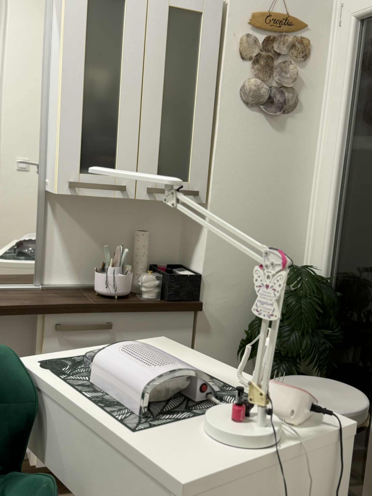
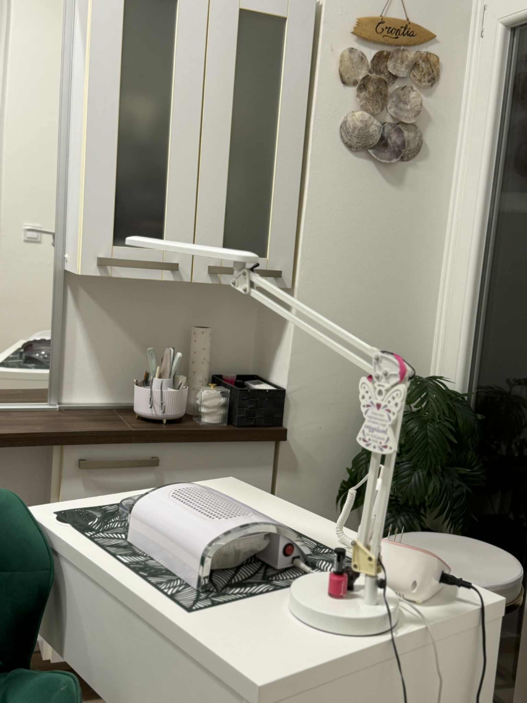

2017-ben végeztem pedikűrösként, és azóta is örömmel és elhivatottsággal végzem a munkám. Számomra a pedikűr nem pusztán szépségápolás, hanem a gondoskodás és a törődés egyik formája. Úgy gondolom, hogy a lábaink megérdemlik ugyanazt a figyelmet és odafigyelést, mint testünk bármely más része, hiszen az egészségünk és jó közérzetünk alapját jelentik.
A szakmámban fontosnak tartom a folyamatos fejlődést: rendszeresen bővítem tudásomat, követem az újdonságokat, és nagy hangsúlyt fektetek arra, hogy modern, megbízható gépekkel és eszközökkel dolgozzak. A precizitás, a higiénia és a minőségi alapanyagok használata számomra elengedhetetlen.
Minden vendégem egyedi, ezért mindig személyre szabottan közelítem meg a kezeléseket. Legyen szó esztétikai pedikűrről, problémás lábak ápolásáról vagy egyszerűen csak kényeztetésről, célom, hogy mindenki elégedetten, felfrissülve és könnyed léptekkel távozzon.
A pedikűr számomra nem csak szakma, hanem hivatás és szenvedély – egy olyan lehetőség, ahol a szépség és az egészség kéz a kézben jár.

Szép és egészséges lábakért!
Frissítés, reszelés, bőrápolás és lakkozás a gyönyörű és ápolt megjelenésért.
Modern eszközökkel történő precíz lábápolás, különös figyelemmel a sarkakra és a bőrkeményedésekre.
Ellazulás és felfrissülés: különleges talpmasszázs stressz és fáradtság ellen.
Szolgáltatás leírása.
Szolgáltatás leírása.
Szolgáltatás leírása.
Szolgáltatás leírása.
Szolgáltatás leírása.
Szolgáltatás leírása.

 



üìç C√≠m: 6500 Baja, Sz√©ps√©g utca 5.
üìû Telefon: +36 30 123 4567
üì± Facebook: facebook.com/pedikurszilvi